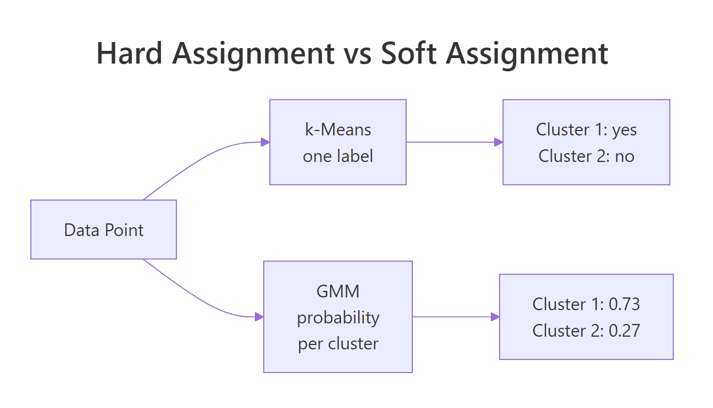
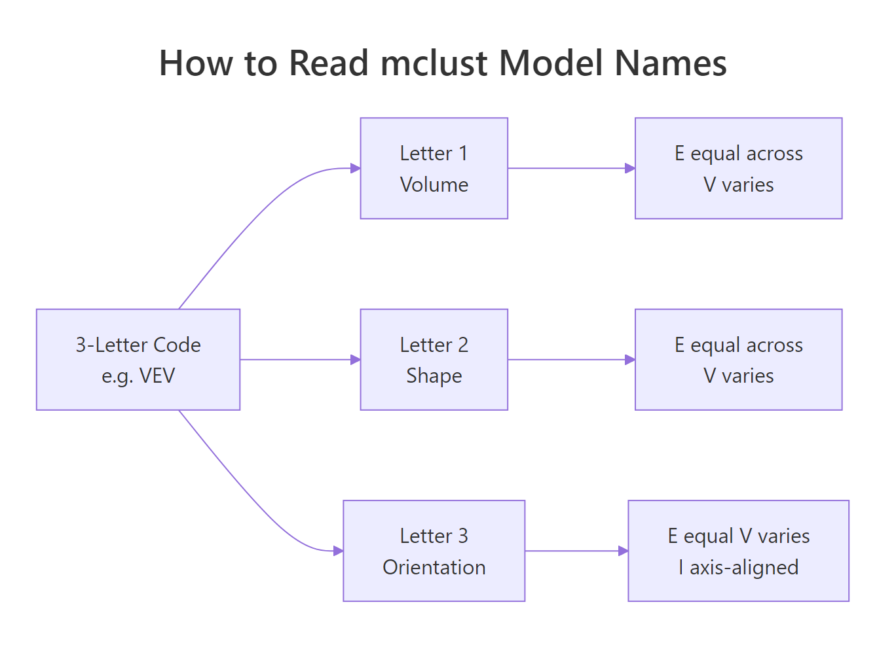
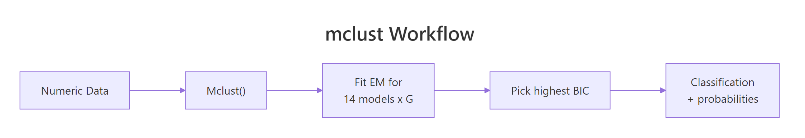

Gaussian Mixture Models in R: mclust Package & Model-Based Clustering
A Gaussian mixture model (GMM) clusters data by fitting a weighted blend of normal distributions, then reports the probability that each point belongs to each cluster. The mclust package automates the entire workflow in one call, including how many clusters to use and which covariance shape fits best.
How do you fit a GMM in R with mclust?
Most clustering tutorials make you choose k upfront and pick a distance metric on faith. mclust does neither. Hand it a numeric data frame and Mclust() will fit Gaussian mixtures across many configurations of cluster count and covariance shape, then return the one that best describes your data by BIC. The full quick-start workflow is four lines.
In four lines, mclust fitted a model with two components, ellipsoidal shape, equal across clusters, and varying volume and orientation per cluster (model name VEV). It selected this configuration by maximizing BIC across all candidate fits. The two-component answer surprises readers expecting three (since iris has three species), and that surprise is the lesson: GMM groups points by distribution shape, not by labels we already know. The two cluster sizes (50 and 100) split iris into setosa versus the lumped versicolor + virginica pair, because versicolor and virginica overlap heavily in the four measured features.
Try it: Run Mclust() on the faithful dataset (Old Faithful eruption durations and waiting times). How many components does it pick, and which model name?
Click to reveal solution
Explanation: BIC selects three components with the EEE shape (every cluster shares the same covariance matrix). The classic two-mode picture you see in faithful's scatterplot is actually three Gaussians once you let the model fit covariances.
What is a Gaussian mixture model?
A Gaussian mixture model treats each observation as drawn from one of K underlying normal distributions. Each component has its own mean vector, covariance matrix, and mixing weight (the prior probability of belonging to that component). The model fits all of those parameters at once with the EM algorithm. Once fitted, you can ask two different questions of every point: which component did it most likely come from (the hard label), and what is the probability it came from each component (the soft assignment).
Formally, the density of a point $x$ under a $K$-component mixture is:
$$f(x) = \sum_{k=1}^{K} \pi_k \, \phi(x \mid \mu_k, \Sigma_k)$$
Where:
- $\pi_k$ = mixing weight of component $k$ (the prior probability), with $\sum_k \pi_k = 1$
- $\phi(x \mid \mu_k, \Sigma_k)$ = multivariate normal density with mean $\mu_k$ and covariance $\Sigma_k$
- $K$ = number of components
The soft-assignment difference is what sets GMM apart from k-means visually.

Figure 1: k-means assigns one label per point; GMM reports a probability for each cluster.
mclust stores both forms on the fitted object: fit$classification is the hard label, and fit$z is an n by K matrix of soft probabilities.
The first iris flower belongs to component 1 with essentially 100% probability. Eleven flowers sit in the overlap region with mixed probabilities between the two components. Hard clustering would silently assign each of them, and you would never know which assignments are confident and which are coin flips. The soft view exposes the borderline cases and lets you decide what to do with them (re-examine, treat separately, or weight them in downstream models).
Try it: Find the iris row with the highest classification uncertainty (the smallest maximum probability across components).
Click to reveal solution
Explanation: Row 73 has only 82% probability for its assigned cluster. apply(fit$z, 1, max) collapses each row of probabilities to its largest value, and which.min() finds the row where that largest value is smallest, the model's most ambivalent point.
How does mclust choose the number of clusters?
mclust does not require you to choose k because it tries many values and many covariance shapes, then ranks them by Bayesian Information Criterion (BIC). BIC rewards models that fit the data well and penalizes them for using too many parameters, so a four-component fit only wins if it explains enough extra variance to pay for the extra means and covariance entries. The full BIC table sits on the fitted object.
Two readings of the table tell you the story: across the VEV column, BIC peaks at G = 2 and gets worse for G = 3, 4, 5, so adding more components is not worth the parameter cost. Across the G = 2 row, VEV beats every other shape, so ellipsoidal-with-equal-shape is the right covariance family for iris. The visual version of this same table is one call away.
The plot makes it obvious that VEV at G = 2 sits above all other curves. When you see two curves clustered near the top across multiple values of G, the two are nearly equivalent and either is defensible.
2 * log-likelihood - p * log(n) (with the sign flipped from the textbook formula), so you pick the highest peak on the plot, not the lowest. This is the single most common confusion when readers first open fit$BIC.Try it: Print the second-best model overall (by BIC, across all G and all model names).
Click to reveal solution
Explanation: sort() flattens the matrix into a named vector keyed by "model,G", so the top three entries name both the covariance family and the cluster count.
What do mclust's 14 model names mean? (EII, VVV, VEV…)
mclust's three-letter codes look cryptic until you read them as a recipe. The first letter controls volume (overall size of each cluster's covariance ellipsoid), the second controls shape (how stretched the ellipsoid is), and the third controls orientation (how the ellipsoid is rotated). Each letter is E (equal across clusters), V (varies across clusters), or I (the identity, meaning axis-aligned for orientation or spherical for shape).

Figure 2: mclust's three-letter codes describe volume, shape, and orientation of each cluster's covariance.
A few names worth remembering:
- EII = equal volume, spherical shape, axis-aligned. Every cluster is the same circle. This is essentially what k-means assumes.
- VII = varying volumes, all spherical. Same as k-means but with cluster-specific radii.
- EEE = same ellipse for every cluster (just different centers).
- VVV = each cluster gets its own free covariance matrix. Most flexible, most parameters.
- VEV (the iris winner) = varying volume per cluster, but equal shape and orientation.
The flexibility-cost tradeoff is real: VVV with 6 components on 4-dimensional data needs roughly 70 parameters, and BIC will punish that on small datasets. Forcing a constrained model often lands closer to the true generating process.
VVV scores higher BIC than EII (less negative is better), reflecting that iris's clusters genuinely have different shapes and orientations. The EII fit still recovers setosa cleanly (it sits well-separated from the others), but it leaks five versicolor flowers into the virginica cluster because EII forces the same spherical shape everywhere. Picking the right covariance family is half the modeling work; the other half is letting BIC choose G.
Try it: Fit the VEI model (varying volume, equal shape, axis-aligned orientation) at G = 3 and report its BIC.
Click to reveal solution
Explanation: VEI sits between EII (-666) and VVV (-581), as expected. It allows different cluster sizes (volume varies) while keeping every cluster's shape the same (axis-aligned ellipses with shared aspect ratio). The trade-off: more flexibility than k-means, fewer parameters than VVV.
How do you visualize and interpret a Mclust fit?
plot.Mclust() is the visual workhorse. It supports four what = arguments: "BIC", "classification", "uncertainty", and "density". Run it on a multivariate fit and mclust draws a scatterplot matrix; on a 2D fit it draws a single panel. The classification plot colors points by hard label and overlays the fitted ellipses, which lets you spot whether the model's ellipsoidal assumption looks right. The uncertainty plot grows the dot size for borderline points, so high-uncertainty regions visually pop.
Two things to look for in the classification plot: (1) do the ellipses cover where the points actually are, or are they too tight or too loose, and (2) are points outside their ellipses the same ones flagged in the uncertainty plot? When yes to both, the model is doing what it should.
what = "density" for a smooth contour view of the fitted mixture. On a 2D fit (like Old Faithful), this plots the implied probability density as contour lines, which is the cleanest way to see how a mixture of Gaussians blends into one continuous surface.Try it: Generate the density plot for the faithful fit you built earlier (ex_fit).
Click to reveal solution
Explanation: Density contours show the mixture's full probability surface, not just the cluster boundaries. The three humps are visible as concentric contour rings; valleys between humps reveal where the model thinks observations are unlikely.
When should you use GMM instead of k-means?
GMM and k-means look similar from far away (both partition points into groups), but they make different assumptions and answer different questions. The decision usually comes down to four traits of your data and your downstream needs.
| Trait | Pick GMM | Pick k-means |
|---|---|---|
| Cluster shape | Elongated, ellipsoidal, rotated | Roughly spherical |
| Cluster sizes | Different sizes are fine | Should be similar |
| Need probabilities | Yes (uncertainty, downstream models) | No (just labels) |
| Dataset size vs dim | n much larger than p^2 per cluster | n similar to p, want speed |
| Choosing k | Let BIC pick | You will run elbow / silhouette anyway |
The cleanest demonstration is a synthetic dataset where the cluster shapes break k-means's assumption.
k-means scores ARI 0.024 (essentially zero, no better than random), because Euclidean distance forces it to slice the data along the long horizontal axis, cutting through both cigars. GMM scores 0.985 because its covariance matrix learns the horizontal stretch, so the two clusters are correctly separated along the vertical axis. When clusters are shaped like data actually shaped in the wild (long, oblique, overlapping), GMM is the model that listens.
Mclust(data, G = 1) tests the "no clustering" hypothesis. A single Gaussian is the null model; if its BIC beats every multi-component fit, your data does not have separable clusters in the GMM sense. Always include G = 1 in your candidate range.Try it: Generate two well-separated spherical clusters and confirm that k-means and GMM agree on those.
Click to reveal solution
Explanation: When clusters are spherical, equal-sized, and well-separated, both methods recover the truth perfectly. GMM's flexibility is overkill but not harmful here; k-means is faster and equally correct.
What if mclust picks too many or too few clusters?
Sometimes BIC chooses a G that does not match what you expected, or a model name that overfits. Three controls let you steer the search without giving up automatic selection: restrict G to a sensible range, restrict modelNames to drop heavily-parameterized families, and add a Bayesian prior to regularize tiny clusters.
n is small, prefer constrained model families (EII, EEE, VEI) and cap G at 3 or 4.scale() for a quick z-score normalization before fitting.This run searches only ellipsoidal models with at most 5 components. Since VEV at G = 2 was already the unconstrained winner, the same answer comes back. The point is that constraining the search makes the result robust: even if you knew the true clusters were ellipsoidal, an unconstrained search might have flirted with a high-BIC EII or EEI fit on a bad bootstrap.
Try it: Force G = 3 (because you know iris has three species) and let mclust pick the best covariance family for that fixed G.
Click to reveal solution
Explanation: At G = 3, VEV still wins among model names. Its BIC is -562.55 versus -561.73 for G = 2, so the unconstrained search prefers two clusters by less than one BIC unit. When two BIC values are this close, either choice is defensible, and domain knowledge (iris really does have three species) is a fine tiebreaker.
Practice Exercises
These two exercises combine multiple concepts from the tutorial. Use distinct variable names so they do not overwrite the running state above.
Exercise 1: Cluster the diabetes dataset and confuse against the truth
mclust ships a diabetes dataset (3 classes, 145 patients, 3 measurements). Fit a GMM to the three numeric columns, report the chosen model name and G, and build a cross-tabulation of cluster labels versus the true class column.
Click to reveal solution
Explanation: mclust selects VVV with 3 components, recovering three groups that align reasonably well with the medical classes (Normal, Chemical, Overt). The Normal class lands cleanly in cluster 1; Overt in cluster 2; Chemical splits across clusters 1 and 3, reflecting the genuine clinical overlap between Chemical and the other two classes on these three measurements.
Exercise 2: Does standardizing iris change the GMM result?
Apply scale() to the iris features, refit Mclust(), and compare the new classification against the unstandardized fit using adjustedRandIndex(). ARI = 1 means identical clustering; ARI near 0 means unrelated.
Click to reveal solution
Explanation: Scaling does not change the chosen model (VEV with 2 components), but it does shift which points sit on the boundary between clusters. ARI of 0.568 means roughly 78% of points get the same hard label after standardization, with disagreement concentrated in the versicolor / virginica overlap region. Standardizing matters most when feature variances differ wildly; on iris the four feature ranges are similar enough that the change is moderate.
Complete Example
Here is the end-to-end workflow on Old Faithful: fit the model, inspect the BIC ranking, plot classification and uncertainty, and count how many borderline points need a second look.
The model splits faithful's 272 observations into three groups: a "short eruption / short wait" cluster, a "long eruption / long wait" cluster, and a transitional middle group. EEE wins by under 6 BIC units over VVV, so a free-covariance fit is a defensible alternative. Eighteen points sit in overlap zones with under 90% confidence, and the most ambivalent of all is row 145 (a 3.67-minute eruption with a 76-minute wait), which the model splits almost exactly 50/50 between clusters 2 and 3. Those are the rows worth a human look in any downstream decision system.

Figure 3: mclust runs EM across many candidate models, then picks the one with the highest BIC.
Summary
| Concept | What to remember |
|---|---|
| Function | Mclust(data, G = 1:9, modelNames = NULL) |
| Output | $classification (hard), $z (soft probs), $BIC, $modelName, $G |
| Selection | BIC across G and 14 covariance models; higher is better |
| Soft assignment | fit$z[i, k] = probability point i belongs to component k |
| Model name | 3 letters: Volume / Shape / Orientation, each E, V, or I |
| When GMM wins | Ellipsoidal or overlapping clusters, you need probabilities, you want auto k |
| When k-means wins | Spherical equal-sized clusters, very large n, you only need labels |
| Visual API | plot(fit, what = "BIC" / "classification" / "uncertainty" / "density") |
| Standardize | scale() before Mclust() when features have wildly different ranges |
References
- Scrucca, L., Fop, M., Murphy, T. B., & Raftery, A. E. (2016). mclust 5: Clustering, Classification and Density Estimation Using Gaussian Finite Mixture Models. The R Journal, 8(1), 289-317. Link
- Scrucca, L., Fraley, C., Murphy, T. B., & Raftery, A. E. (2023). Model-Based Clustering, Classification, and Density Estimation Using mclust in R. CRC Press. Link
- mclust package homepage and reference. Link
- mclust CRAN vignette. Link
- Fraley, C., & Raftery, A. E. (2002). Model-Based Clustering, Discriminant Analysis, and Density Estimation. Journal of the American Statistical Association, 97(458), 611-631. Link
- Boehmke, B. & Greenwell, B. (2020). Chapter 22: Model-based Clustering, in Hands-On Machine Learning with R. Link
Continue Learning
- Cluster Analysis in R: k-Means vs Hierarchical vs DBSCAN, the parent overview that situates GMM among the major clustering families
- k-Medoids Clustering in R: PAM Algorithm, the robust hard-clustering counterpart to GMM
- DBSCAN Clustering in R, for irregularly shaped clusters where Gaussian assumptions break